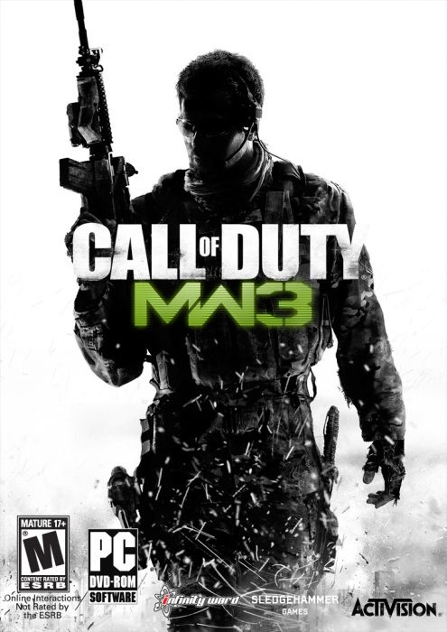

Call of Duty Modern Warfare 3 13.1 GB
Género: FPS
La historia del juego comienza directamente donde acaba el argumento de
Modern Warfare 2, dejando a Estados Unidos bajo el asedio de las fuerzas
rusas, el ultranacionalista Vladimir Makarov en libertad, y los capitanes
«Soap» MacTavish y John Price heridos y a la fuga junto con el informante
ruso Nikolai y el soldado Yuri quien juega un rol muy importante en el juego.